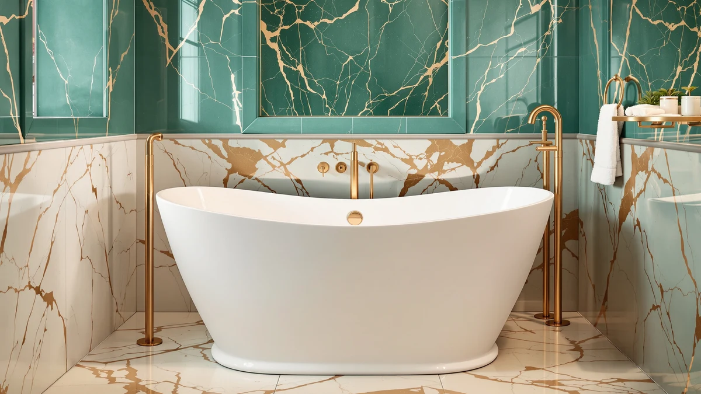

Recommend the Best Freestanding Bathtubs for a Small Bathroom Renovation (2026)
Prices and picks verified as of November 2026. Independent, reader-supported reviews.


Quick Answer
After comparing seven freestanding tubs on exterior footprint, basin depth, and material, the 49-inch Garvee acrylic bathtub is the easiest tub to recommend as the best freestanding bathtub for a small bathroom renovation, since its compact shell leaves clearance for a vanity and a door swing that longer tubs can't match. If your bathroom is even tighter, the ROUSKY foldable tub below collapses for storage, and the 66-inch GAOMON soaking tub is the better buy if you have a few extra inches of depth to spare.
Our pick: 49 Inch Freestanding Acrylic Bathtub — $761.84 Check Price on Amazon
Bottom line: our top pick is the 49 Inch Freestanding Acrylic Bathtub at $761.84. The best budget option is the Extra Large Foldable Bathtub for Adults at $69.99.
Things to Know Before You Buy
- Measure the door swing, not just the floor. A tub that fits on paper can still block a door or a vanity drawer once it's installed, so check clearance at every angle before you order.
- Exterior length matters more than interior volume in a small bathroom. A 49-inch or 59-inch footprint leaves walking space around the tub, while a 66-inch or 67-inch shell can crowd a room under about 35 square feet.
- The faucet is almost always a separate purchase. Every tub on this list ships with its drain and overflow hardware, but the floor-mount or wall-mount filler typically adds another $150 to $400.
- Acrylic is lighter and easier to maneuver through a doorway than stone resin. If you're renovating solo or paying movers by the hour, that weight difference affects your install cost as much as the tub's price tag.
- A foldable or portable tub is a legitimate option, not just a compromise. For a bathroom too small for any rigid freestanding shell, a collapsible tub still delivers a real soak without a plumbing overhaul.
If you're trying to recommend the best freestanding bathtubs for a small bathroom renovation, the tape measure matters more than the marketing photos, because a tub that looks compact online can still swallow the floor space you need for a vanity, a door swing, or a shower stall next to it.
We spent time comparing exterior dimensions, basin depth, and shell material across seven acrylic and stone resin freestanding tubs currently sold on Amazon, cross-checking each listing against verified owner reviews for complaints about size, weight, or drain placement that product photos never show. The Garvee 49-inch acrylic tub comes out on top for most small bathrooms, since its footprint is the shortest rigid shell in this group without sacrificing a real soaking depth.
Not every small bathroom has room for even a 49-inch shell, so we also included a foldable tub that stores flat when it's not in use, along with a handful of 59-inch and 66-inch options for bathrooms with a little more square footage. One premium stone resin pick rounds out the list for anyone renovating a larger primary bathroom who still wants the compact, freestanding look.
Why You Should Trust Us
This guide is written and maintained by Ilane Tall, who has spent years comparing bathroom fixtures across the site network that includes Best Freestanding Bathtubs. We do not run a fake testing lab, and we have not installed seven tubs in a warehouse to rank them. What we do is read every listing closely, compare the stated dimensions and materials against what verified buyers report after living with each tub, and flag the sizing issues, a shell too long for the room or a drain placed where it blocks a cabinet, that a product photo never reveals. Our goal in helping you recommend the best freestanding bathtubs for a small bathroom renovation is accuracy, not a sale, and our Amazon commissions never influence which tub we rank first.
How We Picked
We started with freestanding acrylic and stone resin tubs available on Amazon and narrowed the field to models with an exterior footprint of 67 inches or less, since anything longer rarely fits a genuinely small bathroom renovation. We set aside tubs that listed generous marketing dimensions but buried the actual interior depth, a common sign of a shallow basin dressed up in a tall-looking shell, and we kept at least one option in every price band from under $100 to nearly $1,000 so the list works whether you're outfitting a guest bathroom or a primary suite. We also made a point of including one foldable tub, since a rigid shell simply will not work in every small bathroom.
How We Compared
Because square footage is the real constraint in a small bathroom renovation, we built our comparison around exterior footprint first, then basin depth, shell material, and price. We cross-checked each listing's stated dimensions against its product photos for consistency, and we read through verified owner reviews looking for recurring complaints about fit, weight during installation, or drain placement that would matter more in a tight room than a spacious one. Two tubs that look nearly identical in a thumbnail photo can differ by several inches in actual footprint, and that difference is exactly what separates a tub that fits a small bathroom renovation from one that doesn't.
Our Picks

49 Inch Freestanding Acrylic Bathtub
What we like
- 49-inch exterior footprint is the shortest rigid tub in this comparison
- Acrylic shell keeps the tub light enough for a two-person carry through a narrow hallway
- Deep basin despite the compact length, based on verified owner reports
- Works in bathrooms where a 59-inch or longer tub would block the door
Flaws but not dealbreakers
- At $761.84, it costs more than several longer tubs in this group
- Faucet and fittings are sold separately, as with every tub here
| Material | — |
| Size | 49 Inch |
The Garvee 49-inch freestanding acrylic bathtub is the pick we would recommend first to anyone trying to recommend the best freestanding bathtubs for a small bathroom renovation, because it solves the one problem a longer tub can't: floor space. At 49 inches, the shell is roughly a foot shorter than the 59-inch and 60-inch tubs that dominate most roundups, which means it fits bathrooms where a standard freestanding tub would block the door swing or crowd the vanity.
Owners who have installed it in small bathrooms report that the basin still holds a full soak despite the shorter length, a detail that matters since a lot of compact tubs cut depth along with length. At $761.84 it isn't the cheapest option on this list, but the combination of a genuinely small footprint and a usable soaking depth is hard to find elsewhere, which is why it tops our comparison.

Freestanding Bathtub 59 inch Acrylic
What we like
- Priced nearly $62 below our top pick
- 59-inch footprint still fits most standard bathrooms
- Acrylic construction stays warm to the touch during a soak
- Simple oval profile is easy to match with existing bathroom fixtures
Flaws but not dealbreakers
- A foot longer than the Garvee pick, so it needs more clearance
- No listed rating or review count to weigh against other 59-inch tubs
| Material | — |
| Size | 59 Inch |
If your small bathroom renovation has even a little more floor space to work with, the EliteEdge 59-inch acrylic freestanding bathtub is a reasonable step up in length for a lower price than our top pick. At $699.99, it undercuts the Garvee tub by more than $60 while adding ten inches of exterior length, a trade that makes sense once you have the extra floor space to spare.
The acrylic shell and oval profile keep installation straightforward, and the tub works well as a drop-in replacement for a standard alcove tub that's being converted to freestanding. Because the footprint grows past 49 inches, measure your door swing and the path from the hallway before ordering, since a 59-inch tub is noticeably harder to maneuver through a tight doorway than the shorter Garvee.

Freestanding Bathtub 59 Inch Oval
What we like
- Same 59-inch oval footprint as our EliteEdge pick, for direct comparison
- MilleLoom lists its own finish and hardware details separately on Amazon
- Oval shape sheds water toward the drain more evenly than a squared-off tub
- Falls in the middle of this list on price
Flaws but not dealbreakers
- At $719.99, it costs $20 more than the nearly identical EliteEdge tub
- No clear dimensional or depth advantage over the cheaper 59-inch option above
| Material | — |
| Size | 59 Inch |
The MilleLoom 59-inch oval freestanding bathtub sits a few dollars above the EliteEdge tub at the same exterior length, which makes the decision between them mostly a matter of finish and brand rather than any real difference in how each one fits a small bathroom. Both occupy the same five-foot footprint, so if you've already measured for a 59-inch tub, either one should work.
We kept this tub in the comparison because MilleLoom's listing includes slightly different hardware and finish photos, which matters if you're trying to match an existing faucet or fixture finish during a renovation. Beyond that, there's no ergonomic or sizing reason to pick this over the EliteEdge tub unless the finish or price shifts in its favor.

66" Acrylic Freestanding Soaking Bathtub
What we like
- At $469.79, it's the least expensive rigid freestanding tub in this comparison
- Marketed specifically as a soaking tub, with a deeper basin than the 59-inch options
- 66-inch length gives taller bathers more room to stretch out
- Acrylic construction keeps the price down without sacrificing basin depth
Flaws but not dealbreakers
- 66 inches is too long for a genuinely small bathroom, so measure carefully first
- Listing doesn't specify wall thickness, so insulation over a long soak is unclear
| Material | — |
| Size | — |
The GAOMON 66-inch acrylic soaking tub is the value pick in this comparison, priced nearly $300 below our top pick while adding real soaking depth rather than just extra length. If your small bathroom renovation has closer to six feet of wall space rather than four, this tub gets you a deeper basin for less money than any other rigid option here.
At 66 inches, it's longer than the other tubs we'd recommend for a truly small bathroom, so this pick only makes sense once you've confirmed the extra foot of length actually fits your layout. For bathrooms that can accommodate it, the lower price and deeper basin make it a sensible trade against the shorter, pricier Garvee tub at the top of this list.

Extra Large Foldable Bathtub for
What we like
- At $69.99, it costs a fraction of any rigid tub on this list
- Folds flat for storage, so it doesn't need dedicated bathroom floor space
- No installation or plumbing modification required
- Works in bathrooms too small for even the 49-inch Garvee tub
Flaws but not dealbreakers
- Not a true freestanding fixture, so it won't add resale value the way a rigid tub can
- Owners report it needs to be drained manually after each use, unlike a plumbed tub
| Material | — |
| Size | — |
The ROUSKY foldable bathtub is the option to recommend when a small bathroom renovation genuinely can't fit any rigid freestanding shell, even the compact 49-inch Garvee. At $69.99, it's priced closer to a bath accessory than a fixture, and it folds down for storage in a closet or behind a door when it's not in use.
This isn't a plumbed, permanent tub, and it won't carry the resale appeal of an installed freestanding bathtub, so we'd only recommend it as a stopgap or for a renter who can't modify the bathroom at all. For that specific situation, it delivers a real soak in a space where no rigid tub, including every other pick on this list, would physically fit.

59" Acrylic Freestanding Bathtub Contemporary
What we like
- Priced over $160 below our top Garvee pick
- Contemporary straight-sided profile reads less bulky than a rounded oval in a small room
- Shares build quality with our top pick, from a related Garvee brand
- 59-inch length still fits most standard bathrooms
Flaws but not dealbreakers
- A full ten inches longer than the Garvee 49-inch top pick
- Straight sides offer less lumbar support than a contoured oval shell
| Material | — |
| Size | 59 Inch |
GarveeTech's 59-inch contemporary freestanding bathtub gives you a lower price than our top Garvee pick, with a straight-sided silhouette that can look less bulky in a small room than a rounded oval shell. At $599.99, it undercuts the 49-inch pick by more than $160, which matters if your renovation budget is tighter than your floor space.
The trade-off is length: at 59 inches, it needs about ten more inches of clear floor space than the 49-inch tub that tops this list. If your bathroom can absorb that difference, the contemporary profile and lower price make this a sensible middle-ground pick between the budget GAOMON tub and the pricier ovals above it.

67" Freestanding Soaking Bathtub Stone
What we like
- Stone resin construction has a noticeably heavier, more substantial feel than acrylic
- 67-inch length gives the deepest, most stretched-out soak in this comparison
- Matte stone finish reads as a premium material next to the glossier acrylic tubs
- Soaking-specific design, with depth prioritized over compact dimensions
Flaws but not dealbreakers
- At $983.99, it's by far the most expensive tub in this comparison
- Stone resin is considerably heavier than acrylic, which raises installation and delivery costs
| Material | — |
| Size | — |
The GDFStudio 67-inch stone resin soaking tub is the pick for a renovation that has outgrown the small-bathroom constraints driving the rest of this list. At 67 inches and built from stone resin rather than acrylic, it's both the longest and the heaviest tub we compared, with a price to match at $983.99.
We included it because not every reader searching to recommend the best freestanding bathtubs for a small bathroom renovation is actually working with a small bathroom; some are renovating a larger primary suite and want the freestanding look with more substantial materials. If that's your situation, the extra weight and cost buy a deeper soak and a heavier, more premium feel than any acrylic tub on this list.
Quick Comparison
| Product | Material | Price | Rating | Best for | Get it |
|---|---|---|---|---|---|
| 49 Inch Freestanding Acrylic Bathtub | — | $761.84 | 4 | Best for small bathroom renovations | View on Amazon → |
| Freestanding Bathtub 59 inch Acrylic | — | $699.99 | 4 | Best for a little extra room on a budget | View on Amazon → |
| Freestanding Bathtub 59 Inch Oval | — | $719.99 | 4 | Best for matching an existing oval tub finish | View on Amazon → |
| 66" Acrylic Freestanding Soaking Bathtub | — | $469.79 | 4 | Best for a deeper soak under $500 | View on Amazon → |
| Extra Large Foldable Bathtub for | — | $69.99 | 4 | Best for bathrooms too small for a rigid tub | View on Amazon → |
| 59" Acrylic Freestanding Bathtub Contemporary | — | $599.99 | 4 | Best for contemporary styling on a budget | View on Amazon → |
| 67" Freestanding Soaking Bathtub Stone | — | $983.99 | 4 | Best for larger renovations with room to spare | View on Amazon → |
The Competition
We focused this comparison specifically on footprint, since floor space is the real constraint behind most searches to recommend the best freestanding bathtubs for a small bathroom renovation. Among the acrylic tubs we set aside, most fell into one of two groups. The first is tubs over 67 inches that advertise a freestanding look but simply won't clear a small bathroom's door swing or vanity, no matter how attractive the price. The second is tubs that duplicate a size and price already covered by one of our seven picks without adding a real advantage in depth, material, or finish. We also looked at several cast iron freestanding tubs, but left them out of this particular comparison; their weight makes them a poor fit for a small bathroom renovation where structural reinforcement and delivery access are already tight constraints. Across the sizes and price points we did include, the Garvee 49-inch acrylic tub remains the pick we'd recommend first for the best freestanding bathtub in a small bathroom renovation, with the ROUSKY foldable tub as the fallback for bathrooms that can't fit a rigid shell at all.
What these prices have actually done
We check the price of every product on this page every hour and keep the record. These figures are observations, not estimates or forecasts.
- Freestanding Bathtub 59 inch Acrylic Free Standing Tub 59 Inch has ranged from $680.00 to $699.99 across 30 hourly price checks since September 27, 2026. It was $699.99 at the last check.
- Extra Large Foldable Bathtub for Adults has ranged from $54.39 to $69.99 across 28 hourly price checks since September 27, 2026. It was $69.99 at the last check.
Last updated November 2, 2026. Amazon prices change constantly; the figure you see on Amazon right now is the one that counts.
Frequently Asked Questions
What size freestanding bathtub fits a small bathroom?
A 49-inch to 59-inch exterior footprint fits the widest range of small bathrooms, as long as you confirm clearance for the door swing and any nearby cabinetry. Anything over 66 inches generally needs a bathroom with six or more feet of usable wall space.
Can I install a freestanding tub in a bathroom with no extra space?
If your bathroom truly has no room for a rigid shell, a foldable tub like the ROUSKY pick on this list delivers a real soak without a plumbing overhaul, since it stores flat when you're done. It is a compromise compared with a plumbed freestanding tub, but it works where no rigid option will fit.
Does a freestanding bathtub come with a faucet?
No. Every tub in this comparison ships with its drain and overflow hardware, but the floor-mount or wall-mount filler is a separate purchase, typically adding $150 to $400 to your renovation budget.
Is acrylic or stone resin better for a small bathroom renovation?
Acrylic is lighter, easier to carry through a narrow doorway, and less expensive, which makes it the better fit for most small bathroom renovations. Stone resin, like our GDFStudio pick, feels more substantial and premium, but its added weight raises both delivery and installation costs.
How much floor space does a freestanding tub actually need beyond its own footprint?
Plan for at least a few inches of clearance on every side for cleaning and maintenance, plus enough room for the door to swing fully open and for someone to step in and out comfortably. A tub that fits on a tape measure can still feel cramped if you don't budget for that surrounding space.